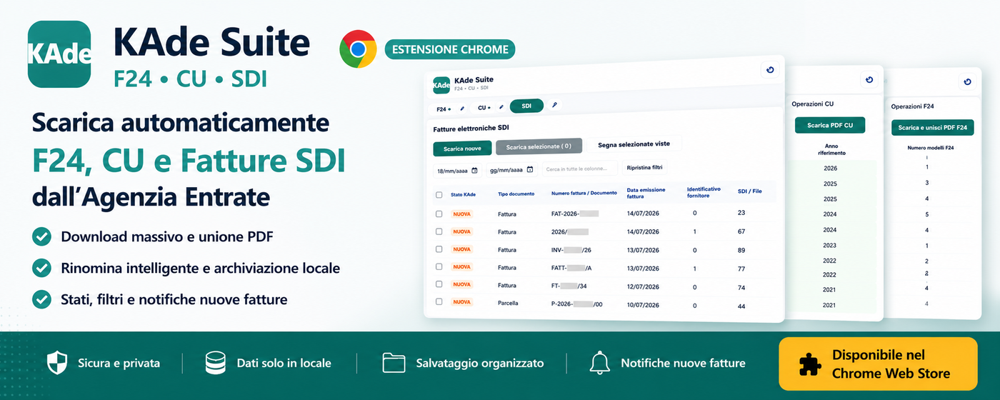
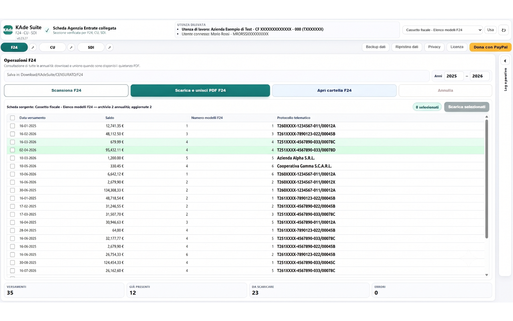
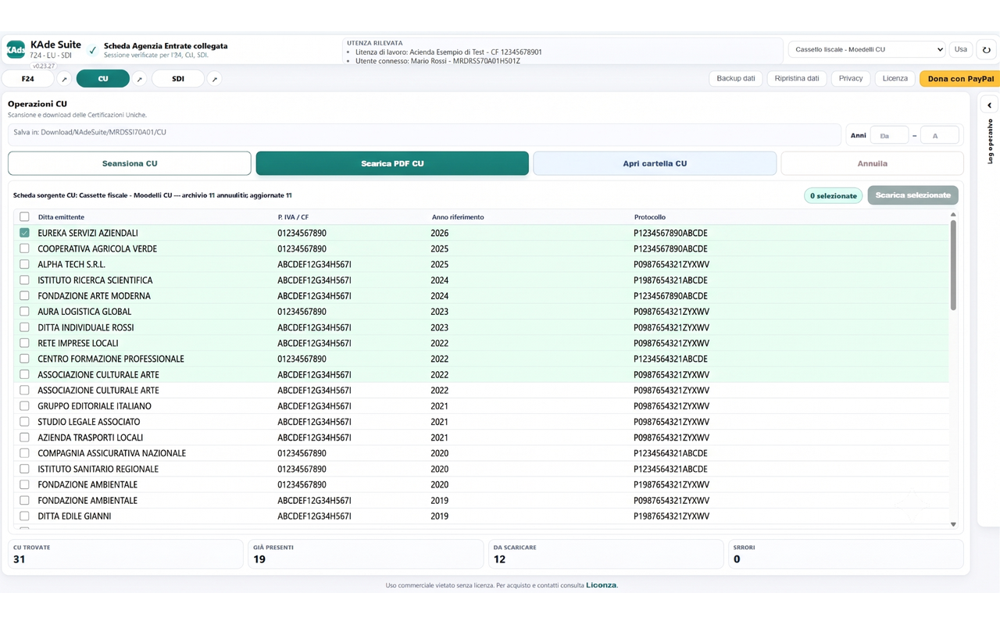
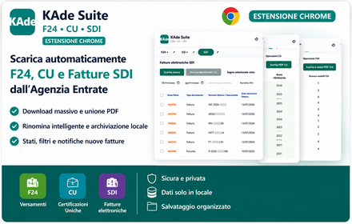
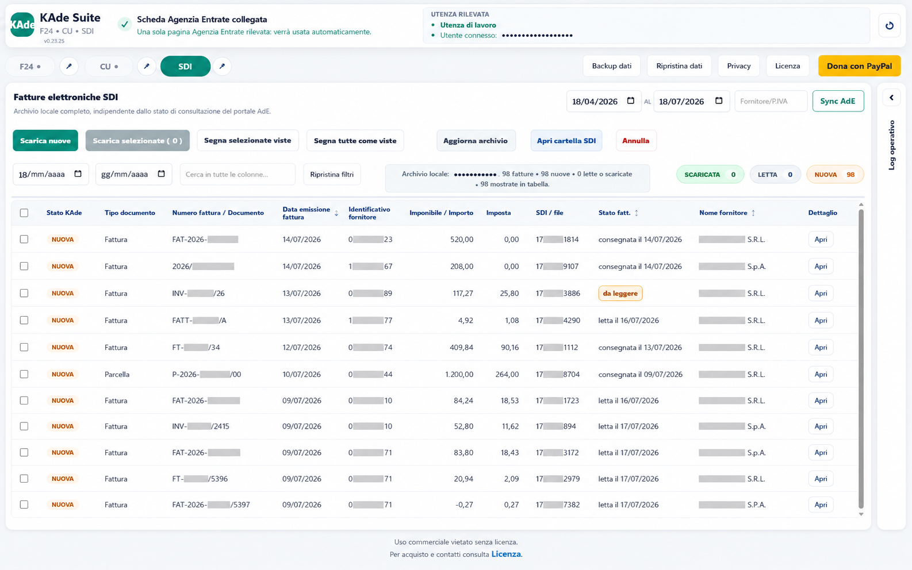

Per l’utente finale
Riduce i passaggi manuali necessari per trovare, scaricare e archiviare F24, Certificazioni Uniche e fatture elettroniche della propria posizione fiscale.
KAde Suite semplifica il download, l’organizzazione e la consultazione di F24, Certificazioni Uniche e fatture elettroniche nei servizi dell’Agenzia delle Entrate. Lavora sulla sessione già aperta e conserva documenti e archivi sul dispositivo.

KAde Suite nasce per aiutare il singolo utente a recuperare e ordinare i propri documenti fiscali. Nel tempo si è evoluta fino a coprire attività più vaste, massive e ripetitive, diventando utile anche nei flussi professionali.
Riduce i passaggi manuali necessari per trovare, scaricare e archiviare F24, Certificazioni Uniche e fatture elettroniche della propria posizione fiscale.
Scansioni, selezioni multiple, controllo dei documenti già presenti, rinomina e archiviazione rendono più gestibili grandi quantità di file.
CAF, commercialisti, consulenti del lavoro e uffici amministrativi possono usare un’unica dashboard mantenendo separati soggetti, documenti e stati operativi.
Autenticati normalmente ai servizi dell’Agenzia delle Entrate e scegli, quando previsto, l’utenza di lavoro.
La dashboard riconosce la sessione e mantiene distinti utente connesso, intermediario, incaricato o persona di fiducia.
F24, CU o SDI: KAde apre o riutilizza in background la pagina corretta ed evita schede di riferimento duplicate.
Scansiona, sincronizza, seleziona, scarica e consulta i documenti senza dover cercare ogni volta la sezione corretta del portale.
Ogni sezione aggiunge una funzione distinta, senza ripetere lo stesso flusso.
Scansione incrementale per annualità, selezione singola o multipla, download delle quietanze, unione dei PDF, controllo dei duplicati e apertura dei file già archiviati.
Recupero progressivo delle Certificazioni Uniche, selezione dei documenti, riconoscimento dell’emittente, rinomina e archiviazione ordinata.
Sincronizzazione dell’elenco fatture, archivio locale ricercabile, stati NUOVA/LETTA/SCARICATA e download di P7M, XML e PDF FatturaPA.
Le operazioni di F24 e Certificazioni Uniche restano chiare, separate e subito disponibili nella stessa interfaccia.

Scansiona le annualità, seleziona le quietanze da scaricare e unisci i PDF quando serve.

Recupera le Certificazioni Uniche, riconosci l’emittente e archivia i documenti con ordine.

Filtri, ricerca, selezione e stato operativo restano disponibili nell’archivio locale anche dopo la sincronizzazione.

Conserva il file originale, estrae localmente l’XML e genera una rappresentazione PDF FatturaPA con hash SHA-256 della sorgente.
Distingue le fatture nuove, lette e scaricate, aggiornando subito contatori, selezioni e badge.
Quando l’archivio dell’utenza è vuoto, KAde può avviare automaticamente la prima sincronizzazione del modulo SDI.
I documenti vengono salvati in Download/KAdeSuite/<CF o P.IVA>/F24, CU e SDI. Il cambio di posizione fiscale non mescola archivi o stati locali. Backup e ripristino trasferiscono configurazione, archivi e stato operativo tramite un file JSON verificato.
Nessun cloud, analytics o invio di documenti allo sviluppatore. KAde Suite non legge né conserva password, cookie o token di autenticazione: utilizza soltanto la sessione già attiva nel browser.
No. Devi prima autenticarti ai servizi dell’Agenzia delle Entrate. Poi apri KAde Suite e selezioni il modulo: l’estensione apre o riutilizza automaticamente la relativa pagina di riferimento. In caso di sessione scaduta ti chiede di effettuare nuovamente l’accesso.
Nella cartella Download predefinita di Chrome, sotto KAdeSuite/<CF o P.IVA>/F24, CU e SDI.
Il codice usa le API standard di Chrome e percorsi relativi alla cartella Download, senza riferimenti fissi a Windows. È quindi progettato per Windows, macOS e Linux. I test principali della versione attuale sono stati eseguiti su Windows; su macOS e Linux è consigliato verificare il flusso con la propria configurazione di Chrome.
No. Non sono presenti analytics, pubblicità, telemetria dello sviluppatore o servizi cloud per i documenti.
KAde Suite è gratuita per uso personale o interno non massivo e non continuativo; la donazione è facoltativa. Per uso professionale, continuativo, massivo o commerciale consulta la licenza.